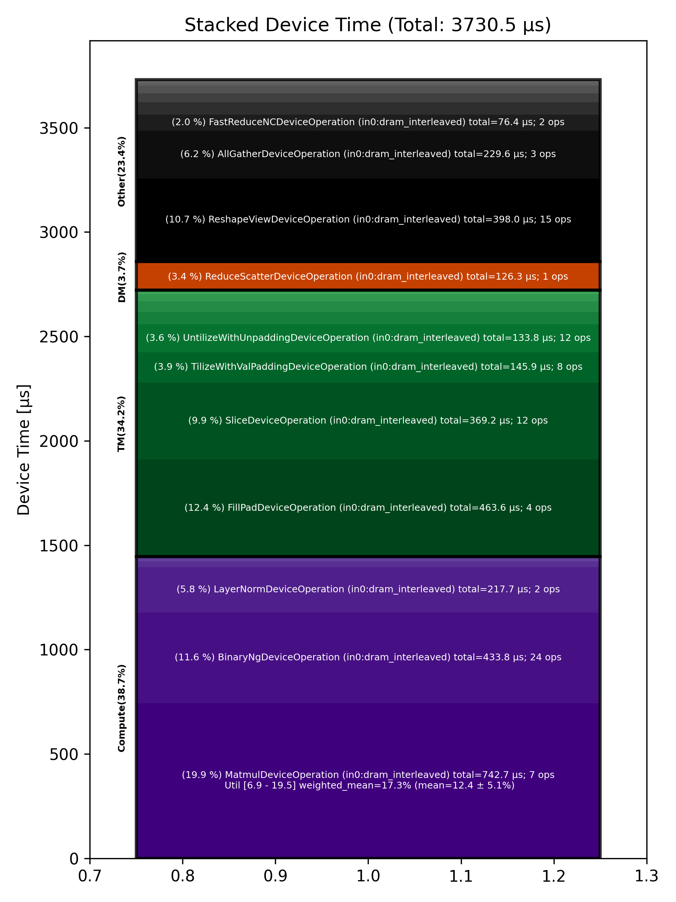

🚀 Performance Report 🚀 ======================== ID Total % Bound OP Code Device Device Time Op-to-Op Gap Cores DRAM DRAM % FLOPs FLOPs % Math Fidelity --------------------------------------------------------------------------------------------------------------------------------------------------------------------------- 19 0.4 % LayerNormDeviceOperation 15 108 μs 1 BF16, BF16 => BF16 51 1.0 % SLOW MatmulDeviceOperation 32 x 2880 x 512 24 42 μs 222 μs 16 40 GB/s 14.0 % 2.3 TFLOPs 6.9 % HiFi2 BF16 x BFP8 => BF16 70 0.4 % ReshapeViewDeviceOperation 0 13 μs 90 μs 72 BF16 => BF16 98 0.7 % SliceDeviceOperation 27 5 μs 168 μs 72 BF16 => BF16 146 1.0 % BinaryNgDeviceOperation 23 16 μs 249 μs 72 BF16, BF16 => BF16 178 0.9 % SliceDeviceOperation 23 5 μs 233 μs 72 BF16 => BF16 220 1.1 % BinaryNgDeviceOperation 10 15 μs 261 μs 72 BF16, BF16 => BF16 246 1.0 % BinaryNgDeviceOperation 12 7 μs 245 μs 72 BF16, BF16 => BF16 286 1.1 % BinaryNgDeviceOperation 8 16 μs 260 μs 72 BF16, BF16 => BF16 299 1.0 % BinaryNgDeviceOperation 7 15 μs 235 μs 72 BF16, BF16 => BF16 341 1.0 % BinaryNgDeviceOperation 13 7 μs 249 μs 72 BF16, BF16 => BF16 368 1.1 % ConcatDeviceOperation 21 8 μs 266 μs 72 BF16, BF16 => BF16 411 2.1 % SLOW MatmulDeviceOperation 32 x 2880 x 64 17 30 μs 500 μs 2 12 GB/s 4.3 % 0.4 TFLOPs 9.6 % HiFi2 BF16 x BFP8 => BF16 445 0.5 % ReshapeViewDeviceOperation 9 3 μs 136 μs 32 BF16 => BF16 468 0.7 % SliceDeviceOperation 14 2 μs 175 μs 16 BF16 => BF16 496 0.4 % PermuteDeviceOperation 21 4 μs 93 μs 16 BF16 => BF16 537 0.4 % BinaryNgDeviceOperation 18 5 μs 96 μs 72 BF16, BF16 => BF16 564 0.4 % SliceDeviceOperation 14 2 μs 95 μs 16 BF16 => BF16 605 1.2 % PermuteDeviceOperation 9 4 μs 302 μs 16 BF16 => BF16 636 0.4 % BinaryNgDeviceOperation 10 5 μs 94 μs 72 BF16, BF16 => BF16 670 0.7 % BinaryNgDeviceOperation 8 3 μs 173 μs 72 BF16, BF16 => BF16 682 0.4 % BinaryNgDeviceOperation 31 5 μs 100 μs 72 BF16, BF16 => BF16 718 0.6 % BinaryNgDeviceOperation 4 5 μs 149 μs 72 BF16, BF16 => BF16 738 1.0 % BinaryNgDeviceOperation 27 3 μs 244 μs 72 BF16, BF16 => BF16 792 0.4 % ConcatDeviceOperation 17 2 μs 99 μs 32 BF16, BF16 => BF16 802 0.7 % InterleavedToShardedDeviceOperation 27 1 μs 180 μs 16 BF16 => BF16 833 0.9 % PagedUpdateCacheDeviceOperation 26 4 μs 224 μs 16 BF16, BF16 => BF16 868 1.1 % SLOW MatmulDeviceOperation 32 x 2880 x 64 10 30 μs 258 μs 2 12 GB/s 4.3 % 0.4 TFLOPs 9.6 % HiFi2 BF16 x BFP8 => BF16 913 0.5 % ReshapeViewDeviceOperation 22 3 μs 122 μs 32 BF16 => BF16 952 0.7 % PermuteDeviceOperation 17 4 μs 163 μs 32 BF16 => BF16 979 1.0 % InterleavedToShardedDeviceOperation 15 1 μs 258 μs 16 BF16 => BF16 993 1.1 % PagedUpdateCacheDeviceOperation 26 4 μs 271 μs 16 BF16, BF16 => BF16 1039 0.4 % PermuteDeviceOperation 20 8 μs 93 μs 72 BF16 => BF16 1063 0.9 % SdpaDecodeDeviceOperation 28 16 μs 225 μs 72 BF16, BF16 => BF16 1107 0.8 % PermuteDeviceOperation 15 22 μs 178 μs 72 BF16 => BF16 1142 0.9 % ReshapeViewDeviceOperation 12 13 μs 218 μs 16 BF16 => BF16 1160 1.4 % SLOW MatmulDeviceOperation 32 x 512 x 2880 18 15 μs 328 μs 45 113 GB/s 39.1 % 6.3 TFLOPs 13.6 % HiFi4 BF16 x BFP8 => BF16 1198 1.7 % AllGatherDeviceOperation 0 68 μs 374 μs 24 BF16 => BF16 1228 0.7 % FillPadDeviceOperation 6 155 μs 29 μs 8 BF16 => BF16 1273 0.3 % FastReduceNCDeviceOperation 18 10 μs 56 μs 72 BF16 => BF16 1281 0.3 % SliceDeviceOperation 26 3 μs 78 μs 72 BF16 => BF16 1337 0.8 % BinaryNgDeviceOperation 18 5 μs 202 μs 72 BF16, BF16 => BF16 1360 1.1 % ReshapeViewDeviceOperation 21 45 μs 242 μs 72 BF16 => BF16 1399 1.1 % BinaryNgDeviceOperation 16 49 μs 225 μs 72 BF16, BF16 => BF16 1411 1.6 % LayerNormDeviceOperation 3 109 μs 300 μs 16 BF16, BF16 => BF16 1448 0.6 % ReshapeViewDeviceOperation 29 29 μs 126 μs 72 BF16 => BF16 1482 0.3 % UntilizeWithUnpaddingDeviceOperation 31 9 μs 63 μs 45 BF16 => BF16 1528 0.7 % RepeatDeviceOperation 17 9 μs 171 μs 72 BF16 => BF16 1552 1.1 % TilizeWithValPaddingDeviceOperation 21 39 μs 239 μs 45 BF16 => BF16 1595 2.6 % DRAM MatmulDeviceOperation 32 x 2880 x 5760 17 358 μs 305 μs 60 191 GB/s 66.5 % 11.9 TFLOPs 19.2 % HiFi4 BF16 x BFP8 => BF16 1601 0.1 % BinaryNgDeviceOperation 26 22 μs 1 μs 72 BF16, BF16 => BF16 1636 0.1 % UntilizeWithUnpaddingDeviceOperation 2 32 μs 1 μs 60 BF16 => BF16 1684 1.3 % SliceDeviceOperation 14 155 μs 185 μs 64 BF16 => BF16 1701 0.5 % TilizeWithValPaddingDeviceOperation 1 39 μs 87 μs 45 BF16 => BF16 1732 0.3 % UnaryDeviceOperation 2 9 μs 58 μs 72 BF16 => BF16 1788 0.8 % BinaryNgDeviceOperation 10 15 μs 176 μs 72 BF16, BF16 => BF16 1800 1.1 % UntilizeWithUnpaddingDeviceOperation 29 32 μs 238 μs 60 BF16 => BF16 1842 1.5 % SliceDeviceOperation 23 155 μs 222 μs 64 BF16 => BF16 1879 0.2 % TilizeWithValPaddingDeviceOperation 16 39 μs 1 μs 45 BF16 => BF16 1908 0.3 % UnaryDeviceOperation 14 9 μs 70 μs 72 BF16 => BF16 1927 0.5 % BinaryNgDeviceOperation 28 16 μs 98 μs 72 BF16, BF16 => BF16 1979 0.6 % UnaryDeviceOperation 11 10 μs 142 μs 72 BF16 => BF16 2003 1.1 % BinaryNgDeviceOperation 15 12 μs 264 μs 72 BF16, BF16 => BF16 2040 1.0 % BinaryNgDeviceOperation 17 12 μs 254 μs 72 BF16, BF16 => BF16 2064 2.8 % SLOW MatmulDeviceOperation 32 x 2880 x 2880 7 235 μs 481 μs 45 147 GB/s 51.2 % 9.0 TFLOPs 19.5 % HiFi4 BF16 x BFP8 => BF16 2091 0.0 % BinaryNgDeviceOperation 7 11 μs 1 μs 72 BF16, BF16 => BF16 2123 0.9 % ReshapeViewDeviceOperation 7 159 μs 65 μs 72 BF16 => BF16 2146 0.6 % TypecastDeviceOperation 27 56 μs 98 μs 72 BF16 => FP32 2177 0.4 % ReshapeViewDeviceOperation 26 47 μs 43 μs 72 FP32 => FP32 2238 1.4 % SLOW MatmulDeviceOperation 32 x 2880 x 32 11 33 μs 326 μs 1 14 GB/s 4.9 % 0.2 TFLOPs 8.8 % HiFi2 FP32 x BFP8 => FP32 2248 0.4 % TypecastDeviceOperation 29 2 μs 87 μs 1 FP32 => BF16 2278 0.8 % FillPadDeviceOperation 0 3 μs 192 μs 1 BF16 => BF16 2328 0.5 % PadDeviceOperation 17 35 μs 86 μs 2 BF16 => BF16 2343 0.8 % FillPadDeviceOperation 28 4 μs 205 μs 1 BF16 => BF16 2383 0.5 % TopKDeviceOperation 20 44 μs 90 μs 1 BF16 => BF16 2424 0.5 % SliceDeviceOperation 17 1 μs 132 μs 1 BF16 => BF16 2459 0.4 % SliceDeviceOperation 11 1 μs 89 μs 1 UINT16 => UINT16 2490 0.7 % TypecastDeviceOperation 19 2 μs 169 μs 1 UINT16 => INT32 2514 0.4 % ReshapeViewDeviceOperation 23 5 μs 91 μs 16 INT32 => INT32 2533 1.2 % UntilizeWithUnpaddingDeviceOperation 1 3 μs 302 μs 16 INT32 => INT32 2589 0.3 % UntilizeWithUnpaddingDeviceOperation 9 3 μs 83 μs 16 INT32 => INT32 2597 0.6 % PermuteDeviceOperation 1 3 μs 153 μs 16 INT32 => INT32 2647 0.3 % PermuteDeviceOperation 16 3 μs 80 μs 16 INT32 => INT32 2686 0.8 % ConcatDeviceOperation 8 2 μs 192 μs 32 INT32, INT32 => INT32 2708 1.0 % PermuteDeviceOperation 14 3 μs 253 μs 16 INT32 => INT32 2723 0.4 % TilizeWithValPaddingDeviceOperation 3 7 μs 89 μs 16 INT32 => INT32 2752 0.8 % SoftmaxDeviceOperation 25 24 μs 180 μs 72 BF16 => BF16 2798 2.4 % AllGatherDeviceOperation 0 52 μs 546 μs 24 INT32 => INT32 2815 1.0 % AllBroadcastDeviceOperation 8 36 μs 213 μs 4 BF16 => BF16 2858 0.4 % UntilizeWithUnpaddingDeviceOperation 31 7 μs 105 μs 1 BF16 => BF16 2880 0.6 % UntilizeWithUnpaddingDeviceOperation 25 7 μs 153 μs 1 BF16 => BF16 2939 0.3 % UntilizeWithUnpaddingDeviceOperation 11 7 μs 69 μs 1 BF16 => BF16 2943 0.8 % UntilizeWithUnpaddingDeviceOperation 24 7 μs 191 μs 1 BF16 => BF16 2996 0.3 % ConcatDeviceOperation 14 2 μs 83 μs 64 BF16, BF16 => BF16 3011 0.8 % TilizeWithValPaddingDeviceOperation 3 5 μs 196 μs 2 BF16 => BF16 3064 0.5 % ReshapeViewDeviceOperation 17 10 μs 120 μs 8 INT32 => INT32 3082 0.6 % SliceDeviceOperation 31 2 μs 145 μs 8 INT32 => INT32 3113 1.0 % UntilizeWithUnpaddingDeviceOperation 30 14 μs 249 μs 8 INT32 => INT32 3149 0.4 % SliceDeviceOperation 5 4 μs 109 μs 72 INT32 => INT32 3192 0.5 % TilizeWithValPaddingDeviceOperation 17 8 μs 132 μs 8 INT32 => INT32 3211 0.5 % BinaryNgDeviceOperation 7 11 μs 114 μs 72 INT32, INT32 => INT32 3247 0.4 % BinaryNgDeviceOperation 20 3 μs 96 μs 72 INT32, INT32 => INT32 3292 0.4 % ReshapeViewDeviceOperation 10 7 μs 93 μs 8 INT32 => INT32 3322 1.1 % ReshapeViewDeviceOperation 19 3 μs 283 μs 8 BF16 => BF16 3348 1.0 % UntilizeWithUnpaddingDeviceOperation 14 7 μs 250 μs 1 INT32 => INT32 3378 1.0 % UntilizeWithUnpaddingDeviceOperation 23 6 μs 241 μs 1 BF16 => BF16 3401 0.6 % ScatterDeviceOperation 30 60 μs 90 μs 1 BF16, INT32 => BF16 3424 0.5 % TilizeWithValPaddingDeviceOperation 25 5 μs 115 μs 64 BF16 => BF16 3478 1.0 % ReshapeViewDeviceOperation 12 23 μs 233 μs 2 BF16 => BF16 3488 0.9 % UntilizeDeviceOperation 25 4 μs 230 μs 2 BF16 => BF16 3539 2.0 % MeshPartitionDeviceOperation 24 2 μs 499 μs 16 BF16 => BF16 3570 1.8 % MeshPartitionDeviceOperation 29 2 μs 448 μs 16 BF16 => BF16 3588 0.5 % TilizeWithValPaddingDeviceOperation 2 4 μs 113 μs 1 BF16 => BF16 3631 0.7 % TransposeDeviceOperation 20 2 μs 181 μs 72 BF16 => BF16 3651 1.0 % ReshapeViewDeviceOperation 3 8 μs 255 μs 64 BF16 => BF16 3702 0.9 % BinaryNgDeviceOperation 12 129 μs 108 μs 72 BF16, BF16 => BF16 3723 1.3 % FillPadDeviceOperation 7 301 μs 41 μs 64 BF16 => BF16 3766 0.3 % FastReduceNCDeviceOperation 12 67 μs 1 μs 72 BF16 => BF16 3803 0.1 % SliceDeviceOperation 11 34 μs 1 μs 72 BF16 => BF16 3822 2.8 % ReduceScatterDeviceOperation 0 126 μs 574 μs 24 BF16 => BF16 3854 1.6 % AllGatherDeviceOperation 0 109 μs 304 μs 40 BF16 => BF16 3901 0.3 % BinaryNgDeviceOperation 9 48 μs 19 μs 72 BF16, BF16 => BF16 3903 0.6 % ReshapeViewDeviceOperation 24 29 μs 128 μs 72 BF16 => BF16 --------------------------------------------------------------------------------------------------------------------------------------------------------------------------- 100.0 % 123 device ops, 0 host ops, 0 signposts 3,731 μs 21,670 μs 📊 Stacked report 📊 ==================== Total % Op Code Device Time Sum Op Count Op Category Min FLOPs Max FLOPs Mean FLOPs Std FLOPs Weighted Mean FLOPs ------------------------------------------------------------------------------------------------------------------------------------------------------------------------------ 19.91 % MatmulDeviceOperation (in0:dram_interleaved) 742.72 μs 7 Compute 6.86 % 19.54 % 12.45 % 5.14 % 17.27 % 12.43 % FillPadDeviceOperation (in0:dram_interleaved) 463.60 μs 4 TM 11.63 % BinaryNgDeviceOperation (in0:dram_interleaved) 433.76 μs 24 Compute 10.67 % ReshapeViewDeviceOperation (in0:dram_interleaved) 397.99 μs 15 Other 9.90 % SliceDeviceOperation (in0:dram_interleaved) 369.24 μs 12 TM 6.16 % AllGatherDeviceOperation (in0:dram_interleaved) 229.61 μs 3 Other 5.84 % LayerNormDeviceOperation (in0:dram_interleaved) 217.68 μs 2 Compute 3.91 % TilizeWithValPaddingDeviceOperation (in0:dram_interleaved) 145.86 μs 8 TM 3.59 % UntilizeWithUnpaddingDeviceOperation (in0:dram_interleaved) 133.80 μs 12 TM 3.39 % ReduceScatterDeviceOperation (in0:dram_interleaved) 126.34 μs 1 DM 2.05 % FastReduceNCDeviceOperation (in0:dram_interleaved) 76.44 μs 2 Other 1.60 % ScatterDeviceOperation (in0:dram_interleaved) 59.59 μs 1 Other 1.59 % TypecastDeviceOperation (in0:dram_interleaved) 59.47 μs 3 TM 1.34 % PermuteDeviceOperation (in0:dram_interleaved) 50.02 μs 8 TM 1.18 % TopKDeviceOperation (in0:dram_interleaved) 44.20 μs 1 Other 0.97 % AllBroadcastDeviceOperation (in0:dram_interleaved) 36.07 μs 1 Other 0.94 % PadDeviceOperation (in0:dram_interleaved) 35.00 μs 1 TM 0.75 % UnaryDeviceOperation (in0:dram_interleaved) 27.79 μs 3 Compute 0.63 % SoftmaxDeviceOperation (in0:dram_interleaved) 23.53 μs 1 Compute 0.44 % SdpaDecodeDeviceOperation (in0:dram_interleaved) 16.37 μs 1 Other 0.35 % ConcatDeviceOperation (in0:dram_interleaved) 12.88 μs 4 TM 0.24 % RepeatDeviceOperation (in0:dram_interleaved) 9.09 μs 1 Other 0.22 % PagedUpdateCacheDeviceOperation (in0:dram_interleaved) 8.29 μs 2 DM 0.10 % UntilizeDeviceOperation (in0:dram_interleaved) 3.87 μs 1 TM 0.09 % MeshPartitionDeviceOperation (in0:dram_interleaved) 3.48 μs 2 Other 0.05 % InterleavedToShardedDeviceOperation (in0:dram_interleaved) 2.02 μs 2 DM 0.05 % TransposeDeviceOperation (in0:dram_interleaved) 1.82 μs 1 TM ------------------------------------------------------------------------------------------------------------------------------------------------------------------------------
